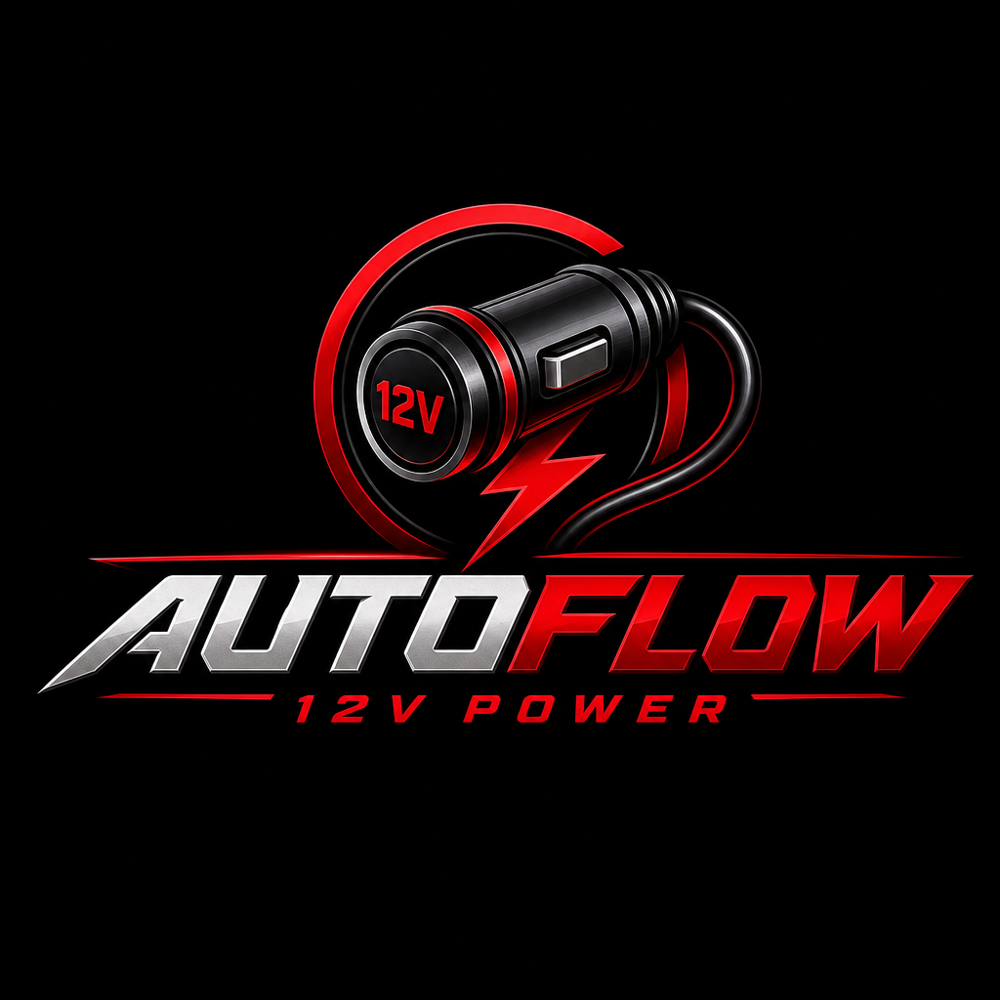

The first 12‑volt powered wireless Android Auto device.
No USB ports. No cables. No installation.
Plug AUTOFLOW into any cigarette lighter or accessory socket, start the engine, and your phone connects automatically.
Most wireless Android Auto adapters still rely on your car’s USB port — and that’s a problem.
USB ports loosen, break, deliver unstable power, or are buried in the console. Some vehicles don’t have USB ports at all.
When the USB port fails, every USB‑dependent wireless adapter fails with it.
AUTOFLOW bypasses USB entirely.
It plugs into any 12‑volt cigarette lighter or accessory socket, powers itself, and creates a dedicated wireless Android Auto bridge — completely independent of your vehicle’s USB electronics.
No wiring. No tools. No installation. Just plug in and drive.
Runs from any cigarette lighter or accessory socket. No USB dependency.
No USB handshake, no port failures, no cable negotiation.
Start the car and your phone connects in 3–5 seconds.
Stable 12‑volt power means smoother wireless performance.
If your screen supports wired Android Auto, AUTOFLOW makes it wireless.
Plug in once. Pair once. Done.
Wireless Android Auto, finally done right. Join the early access list for launch‑day priority and exclusive pricing.